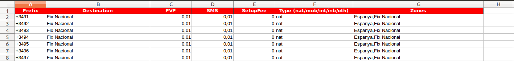

Configuración inicial¶
Antes de poder realizar operaciones en la aplicación, en primer lugar es necesario realizar una configuración inicial.
A continuación se exponen los pasos necesarios para la configuración inicial, a modo de checklist o lista de comprobación.
Nota
No es necesario realizar los pasos en el orden expuesto, aunque se recomienda seguirlo. Deberán finalizarse todos ellos para poder trabajar con la aplicación. Si alguno de ellos es opcional, se indicará en la explicación.
Ajustes generales de la aplicación (ISP » Ajustes » Ajustes)

- (Opcional) Definir un subdiretorio para los ficheros CDR.
- (Opcional) Modificar los productos de facturación de consumos de llamadas creados por defecto. Son losproductos que se utilizarán en las líneas de factura correspondientes a los consumos telefónicos.
- Activar los módulos de importación de ficheros CDR necesarios. Actualmente se han creado los de Lemonvil para llamadas de móvil y EveryWAN para llamadas de fijos.
- Tarifas (ISP » Ajustes » Tarifas)
Definir las tarifas tanto de compra como de venta.

- Definir como mínimo una tarifa de venta completa.
- Definir un proveedor (en el maestro de Empresas) por cada operador que suministrará ficheros CDR.
- Definir una tarifa de compra por cada proveedor de ficheros CDR.
- Importar Tarifa (ISP » Asistentes » Importar tarifas)
Este asistente sirve tanto para importar como exportar tarifas. El proceso habitual es exportar primero la tarifa (aunque esté vacía), porque así se tiene una plantilla del fichero Excel para su posterior importación
Otra ventaja añadida de este asistente es que creará los prefijos definidos en el fichero Excel y que aún no existan en la aplicación.
Primero exporte la tarifa:
Descargue el fichero:
Ábralo:
Importante
La columna correspondiente a los prefijos debe ser de tipo carácter y tener el signo + delante. Para evitar que se interprete como un numérico (y no se guarde el signo +), quizás será necesario poner delante del + un apóstrofo “.
Deben escribirse bien los tipos Type:
- nat: Nacional fijo
- mob: Nacional móvil
- int: Internacional
- inb: 900 Entrante
- oth: Red inteligente
Una vez especificados todos los prefijos, guarde el fichero.
Vuelva a abrir el asistente (ISP » Asistentes » Importar tarifas)
Seleccione el fichero y haga clic en el botón
Comprobar archivo.Una vez comprobado, haga clic en el botón
Importar tarifas.Una vez importado, vaya a ISP » Ajustes » Prefijos » Nacional y verá que ha creado el prefijo +34.
- Crear productos (ISP » Ajustes » Productos » Productos)
Se abrirá la ficha de producto:
Los campos más importantes relacionados con el vertical son los siguientes:
Nombre del productoPrecio de ventaDescipción de ventas(está en la pestañaVentas)Tipo ISP:Debe definir correctamente el tipo de producto. El significado de los distintos tipos es el siguiente:
- Fibra: Productos que se utilizarán en líneas de contrato de fibra.
- Móvil: Productos que se utilizarán en líneas de contrato de móvil.
- Línea Fija: Productos que se utilizarán en líneas de contrato de teléfono fijo.
- Bono: Productos que se utilizarán en líneas de contrato de bono.
- Puntual: Productos que se utilizarán en líneas de contrato de cargos puntuales. Estos cargos solamente se facturan una vez (habitualmente en la siguiente factura mensual) y no tienen información de periodicidad de facturación.
- Llamadas: Productos que se utilizarán en las líneas de detalle de las facturas de consumo. Habitualmente, cada tipo de llamada se corresponderá con una línea de detalle de consumo en la factura.
- Tipos de contrato (ISP » Ajustes » Tipos de contrato)
-
- Edite el tipo de contrato creado por defecto durante la instalación para adaptarlo a las necesidades de la empresa.
- (Opcional) Crear nuevos tipos de contrato, si es necesario.
- Prefijos (ISP » Ajustes » Prefijos)
Defina los prefijos necesarios. Cada tipo de prefijo se encuentra en un submenú de este menú:
- Nacional
- Móvil
- Internacional
- 900 entrada
- Red inteligente
- Zonas (ISP » Ajustes » Zonas)
- Defina zonas. Será necesario definir antes los prefijos.
- Acuerdos de contrato (ISP » Ajustes » Acuerdos de contrato)
- Cree como mínimo una plantilla de acuerdo de contrato.
- Perfiles de importación (ISP » Ajustes » Perfiles de importación)
- Cree un Perfil de importación por cada proveedor de ficheros CDR que se utilice.
- Perfiles de facturación (ISP » Ajustes » Perfiles de facturación)
Modifique el Perfil de facturación creado por defecto durante la instalación para adaptarlo a las necesidades reales.
(opcional) Crear nuevos perfiles de facturación.
Nota
Si se utiliza la facturación automatizada (por cron), se utilizará el primer perfil activo de la lista. Los perfiles restantes solo se utilizarán como opciones en la facturación manual de contratos.
- Teléfonos vetados (ISP » Ajustes » Teléfonos vetados)
- (Opcional) Defina los teléfonos cuyas llamadas se omitirán.
{kind=link}
{kind=link}
{kind=link}
{kind=link}
{kind=link}
{kind=link}
{kind=link}